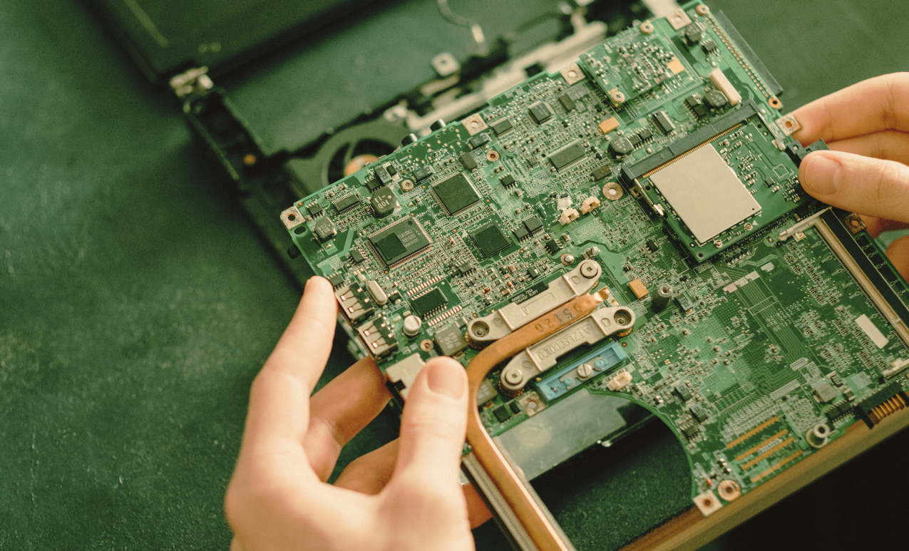

WHAT ARE MOTHERBOARDS?
A small board controlling the computer, providing efficient performance and smooth functioning for daily use, without which modern systems would not exist or function.
| ▼ | On this Page |
|---|
| Date | 23 Oct. 2025 |
|---|
Communication is essential in our daily lives; without it, we would not be able to connect or understand one another.
In computing, the motherboard serves a similar purpose. It is a printed circuit board (PCB) that supplies power and enables communication among a computer’s hardware components (Lenovo, n.d.).
Without it, the components would not be able to communicate, and the computer would simply not function.
| Functions of a Motherboard | ||
|---|---|---|
| Manages the data flow within the operating system, allowing it to interact effectively with the input and output devices connected to the computer to perform its intended functions. | Enables communication among different components, coordinating them to complete instructions efficiently. By working together, it optimizes resource use for faster and more efficient processing. | Supplies power to all components by converting electricity from the power source into a usable form, ensuring the computer operates smoothly without disruption. |
I. Parts of a Motherboard
1. Common Parts in a Motherboard
- CPU socket – provides a socket interface that allows the CPU to be installed or replaced without soldering in the motherboard (GIGABYTE, n.d.)
- Memory slots (RAM) – allow you to insert memory modules that expand your computer’s memory capacity, enabling it to store more data and run applications more efficiently (Lenovo, n.d.)
- Storage connectors (SATA) – connection interfaces used for integrating storage devices such as HDDs, SSDs, and optical drives into the system (Assured Systems, n.d.)
- Expansion slots (PCIe) – allows you to connect additional components to your system, expanding its capabilities and giving your computer more functionality (Lenovo, n.d.)
- Power connectors and ports – facilitate the flow of electricity from the power source and convert it into the proper form that allows the computer to run efficiently (Lenovo, n.d.)
- Input/output interfaces – functions as a communication method that enables data transfer between internal storage devices (GeeksforGeeks, 2025)
2. Northbridge and Southbridge
In managing the data flow efficiently, it uses the northbridge and southbridge to control communication between different subsystems (GeeksforGeeks, 2025).
| Northbridge | Connects the CPU, RAM, and high-speed components such as the PCI Express (PCIe) slots. It allows data to transfer between these parts so the CPU can process instructions and produce outputs that can be displayed or stored. |
|---|---|
| Southbirdge | Handles communication between the CPU (through the Northbridge) and slower peripherals like the BIOS, USB ports, SATA drives, and PCI devices. It manages input and output operations, storage connections, and other lower-speed interfaces. |
3. Central Processing Unit (CPU)
The brain of the computer is located on the motherboard. It executes the instructions that make your computer functional, handling most of the thinking, calculations, and decision-making (GeeksforGeeks, 2025)
Like a mind, it processes data and coordinates how all the other components work together to perform tasks efficiently.
3 Important Components
- Arithmetic Logic Unit (ALU) – performs all computational processes, such as arithmetic calculations and logical operations.
- Control Unit (CU) – synchronizes all operations through its clock, latch, and reset circuits, ensuring that all components work together in coordination to complete tasks efficiently.
- Memory Unit – stores data and instructions that it has processed
II. Types of Motherboard
Motherboards come in different types and sizes, each designed to meet specific needs for performance, space, and compatibility (BasuMallic, 2023).
1. Big Motherboard
- Advanced Technology (AT) Motherboard – one of the earliest designs, large and bulky, used in older computers.
- Advanced Technology Extended (ATX) Motherboard – the most common type today; offers good layout, expandability, and efficient power use. Allows for efficient airflow and easy upgrading, making it popular in both home and office computers.
- Balanced Technology Extended (BTX) Motherboard – designed by Intel for better cooling and airflow, but not widely adopted.
- Extended-ATX (eATX) Motherboard – a larger version of ATX with more slots and power, ideal for workstations and servers.
| Form Factor | Build | CPU Slots | Memory Slots | Chipsets | BIOS | PCI Slots | SATA | Built-in Features |
|---|---|---|---|---|---|---|---|---|
| AT Motherboard | 13.8 × 12 in | 1 | 2 | Early Intel chipsets | Legacy BIOS | 2-3 ISA/PCI | Parallel ATA/IDE | Basic power and 1/0 connectors |
| ATX Motherboard | 12 × 9.6 in | 1 | 4 | Intel/AMD modern chipsets | UEFI/BIOS | 7 PCI/PCIe | 4-8 SATA ports | USB, audio, LAN, and optional graphics |
| BTX Motherboard | 12.8 × 10.5 in | 2 | 2-4 | Intel-designed BTX chipsets | BIOS | 7 PCI/PCIe | 2-6 SATA ports | Improved airflow, built-in audio, and LAN ports |
| Extended-ATX Motherboard | 12 × 13 in | 1-2 | 8-12 | Hig-end Intel/AMD server chipsets | UEFI/BIOS | 10 PCIe | 6-16 SATA ports | Multi-GPU advanced cooling, and hgh-end connectivity |
2. Compact Motherboard
- Low-Profile Extended (LPX) Motherboard – built for slim desktops with a riser card for expansion. However, it had limited upgrade potential and was eventually replaced by newer designs.
- Micro-ATX Motherboard – a smaller, budget-friendly version of ATX with fewer expansion slots.
- Mini-Information Technology Extended (ITX) Motherboard – compact and highly efficient, designed for small-form-factor (SFF) PCs.
- Mini-ATX Motherboard – slightly smaller than Micro-ATX, offering a balance of size and performance.
- Pico-BTX Motherboard – the smallest BTX variant, efficient and space-saving for compact systems.
| Form Factor | Build | CPU Slots | Memory Slots | Chipsets | BIOS | PCI Slots | SATA | Built-in Features |
|---|---|---|---|---|---|---|---|---|
| LPX Motherboard | 9 × 13 in | 1 | 4 | Early Intel chipsets | Legacy BIOS | 1-2 PCI | 2-4 SATA Ports | Integrated video, audio, and I/O via rise card |
| Micro-ATX Motherboard | 9.9 × 9.9 in | 1 | 4 | Modern Intel/AMD Chipsets | UEFI/BIOS | 4 PCIe | 4-8 SATA ports | Built-in audio, LAN, and USB support |
| Mini-ITX Motherboard | 6.7 × 6.7 in | 1 | 2 | Intel/AMD compact chipsets | UEFI/BIOS | 1 PCIe | 2-4 SATA ports | Integrated Wi-Fi, Bluetooth, and graphics |
| Mini-ATX Motherboard | 5.9 × 5.9 in | 1 | 2 | Intel/AMD chipsets | UEFI/BIOS | 2 PCIe | 2-4 SATA ports | Onboard audio, LAN, and USB ports |
| Pico -BTX Motherboard | 8 × 10.5 in | 1 | 4 | Intel BTX chipsets | Legacy BIOS | 1 PCIe | 2-4 SATA ports | Compact design with built-in audio and LAN |
| Reference |
|---|
- Assured Systems. (n.d.). What are SATA connectors? https://www.assured-systems.com/faq/what-are-sata-connectors/
- BasuMallick, C. (2023). What is a motherboard? Definition, components, and functions. Spiceworks. https://www.spiceworks.com/tech/hardware/articles/what-is-motherboard/#_004
- BasuMallick, C. (2023). What is BIOS? A guide for beginners. Spiceworks. https://www.spiceworks.com/tech/devops/articles/what-is-bios/
- Beebom. (2025). Types of motherboards: Motherboard sizes explained. https://beebom.com/motherboards-sizes-types-compared/
- GeeksforGeeks. (2025). Central Processing Unit (CPU). https://www.geeksforgeeks.org/computer-science-fundamentals/central-processing-unit-cpu/
- GeeksforGeeks. (2025). Introduction to Input-Output Interface. https://www.geeksforgeeks.org/computer-organization-architecture/introduction-to-input-output-interface/
- GeeksforGeeks. (2025). Motherboard. https://www.geeksforgeeks.org/computer-organization-architecture/what-is-a-motherboard/
- GIGABYTE. (n.d.). What is a CPU socket: Definition & Benefit. https://www.gigabyte.com/Glossary/cpu-socket
- Intel. (n.d.). How to choose a motherboard. https://www.intel.com/content/www/us/en/gaming/resources/how-to-choose-a-motherboard.html
- Lenovo. (n.d.). Memory slot. https://www.lenovo.com/ph/en/glossary/memory-slot/
- Lenovo. (n.d.). Power port. https://www.lenovo.com/us/en/glossary/power-port/
- Lenovo. (n.d.). What does a motherboard do? https://www.lenovo.com/ph/en/glossary/what-does-a-motherboard-do/
- Lenovo. (n.d.). What is an expansion slot? https://www.lenovo.com/ph/en/glossary/expansion-slot/
- MiniTool Software Ltd. (2023). What are ATX motherboard dimensions in ATX specification? https://www.partitionwizard.com/partitionmagic/atx-motherboard-dimensions.html
- PC TechGuide. (2015). BTX – Balanced Technology eXtended – Motherboard Form Factor. https://www.pctechguide.com/motherboards/btx-balanced-technology-extended-motherboard-form-factor
- SilverStone Technology. (n.d.). Motherboard form factor guide (WH11_008). https://www.silverstonetek.com/en/tech-talk/wh11_008
Thank you for your curiosity.